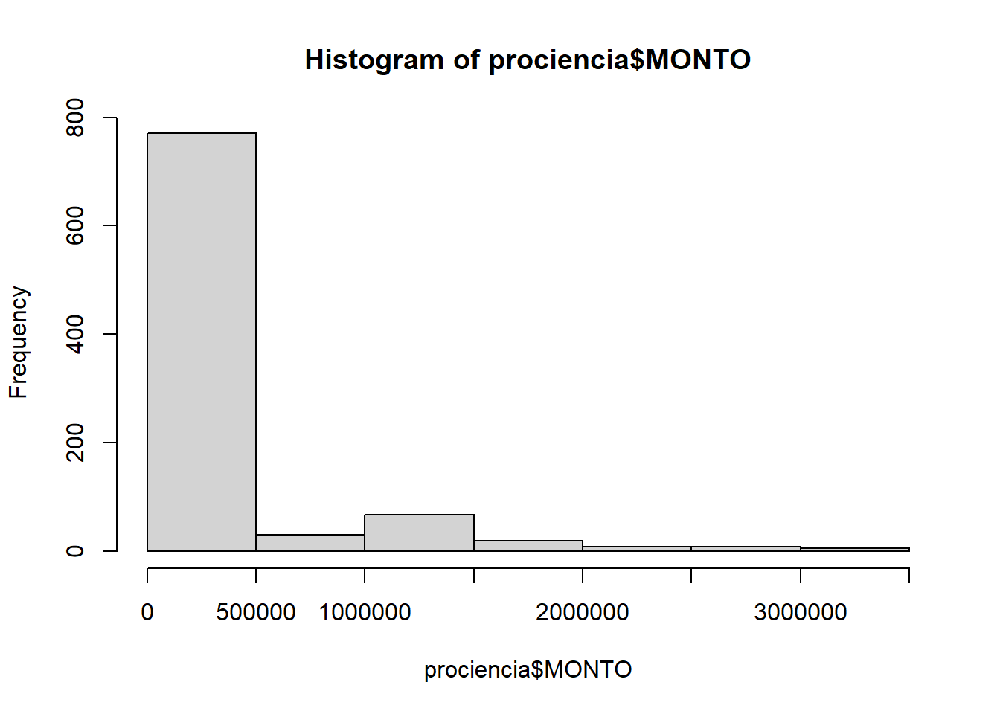
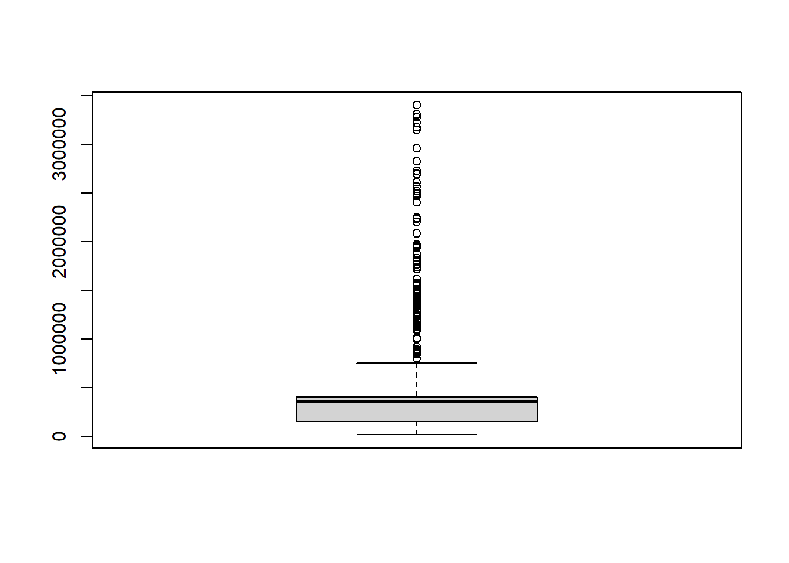
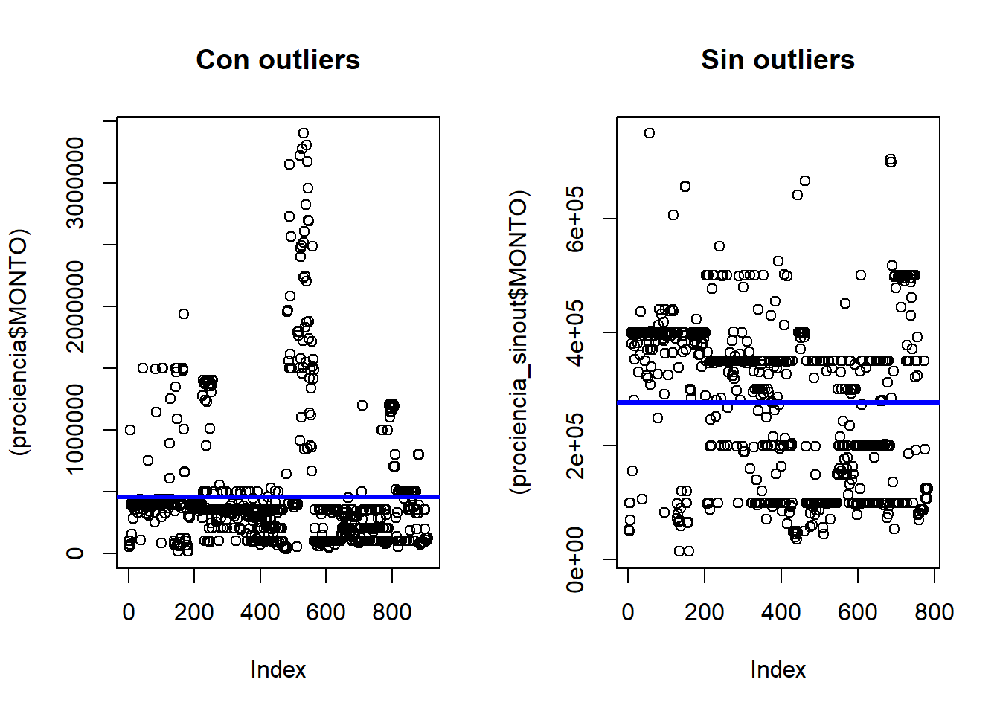

FACULTAD DE CIENCIAS SOCIALES - PUCP
Curso: SOC294 - Estadística para el análisis sociológico 1
Semestre 2025 - 2
Antes de iniciar, abrimos las librerias que usaremos en el
laboratorio rio, dplyr, psych
Para fusionar bases de datos, es necesario identificar la(s)
variable(s) llave/clave y definir qué bases y casos se quiere priorizar
para el análisis.
En este caso, hogar es la variable clave.
hogar1 <- data.frame(hogar=c("A", "B", "C", "D"), hijos=c(2,3,4,1), ingreso = c(1000, 2000, 1500, 1000))
hogar2 <- data.frame(hogar=c("A", "B", "C", "E"), zona=c("urb", "urb", "rur", "rur"), region = c("Lima", "Lima", "Lima", "Lima"))
hogar1## hogar hijos ingreso
## 1 A 2 1000
## 2 B 3 2000
## 3 C 4 1500
## 4 D 1 1000hogar2## hogar zona region
## 1 A urb Lima
## 2 B urb Lima
## 3 C rur Lima
## 4 E rur LimaSe pueden fusionar bases con merge o dplyr
es la variable clave.
hogaresA = merge(hogar1, hogar2, all=FALSE)
hogaresB = merge(hogar2, hogar1, all= FALSE)
hogaresC = merge(hogar1, hogar2, all=TRUE)
hogaresD = merge(hogar2, hogar1, all=TRUE)
left_hogar = dplyr::left_join(hogar1, hogar2, by = "hogar")
right_hogar = dplyr::right_join(hogar1, hogar2, by = "hogar")
inner_hogar = dplyr::inner_join(hogar1, hogar2, by ="hogar")
full_hogar = dplyr::full_join(hogar1, hogar2, by = "hogar")¿Hay diferencia entre hogarC o full_hogar?
Observa detalladamente cada una de las bases, para entender la
lógica.
hogaresC## hogar hijos ingreso zona region
## 1 A 2 1000 urb Lima
## 2 B 3 2000 urb Lima
## 3 C 4 1500 rur Lima
## 4 D 1 1000 <NA> <NA>
## 5 E NA NA rur Limafull_hogar ## hogar hijos ingreso zona region
## 1 A 2 1000 urb Lima
## 2 B 3 2000 urb Lima
## 3 C 4 1500 rur Lima
## 4 D 1 1000 <NA> <NA>
## 5 E NA NA rur LimaEjercicio 1: Descarga la base de datos
P2. Universidades Peru. Importa cada hoja de excel como una
base de datos diferente. Ejercicio 2: Identifica la
variable clave y fusiona ambas bases de datos en una nueva
bases de datos llamada universidades. Esta nueva base de
datos debe contener información de todas las universidades, incluyendo
las fechas en las que salieron la resolución de las denegatorias
Ejercicio 3: Crea tres nuevas variables: i) una
variable (licensed) que identifique con un 0
las universidades con licencia denegada y con un 1 con
licencia aprobada, ii) una variable (gestion_tipo), que
tenga las categorias privada asociativa,
privada societaria y publica, iii) una
variable (years_operation) que identifique el total de años
que la universidad se encuentra o estuvo operativa.
Nota Para crear nuevas variables, recuerda que R
también cuenta con operadores matemáticos,
operadores relacionales, operadores lógicos.
Puedes encontrar más detalle aquí
Recordemos iniciar estableciendo nuestro directorio de trabajo. Previamente ya hemos instalado, los paquetes.
getwd() # muestra el directorio de trabajo actual## [1] "C:/Users/Lala/Documents/GitHub/Estadistica1_sociologia_2025_2.github.io"#setwd("C:/Users/sr.esquivesb/Documents/GitHub/Estadistica1_sociologia_2025_2.github.io") #indica el directorio de trabajo donde quiero trabajar.En esta sección veremos algunos ejemplos de tratamiento de datos
atipicos.
Los datos atipicos pueden influir en los resulados afectando la validez
e interpretacion de los resultados de un modelo.
Muchos modelos estadisticos asumen una distribucion normal de datos, la
presencia de datos atipicos pueden ir en contra de estos
supuestos.
De otro lado, si se trabaja con datos desbalanceados, el modelo puede
sesgarse hacia la clase mayoritaria.
Para esto trabajaremos con la base de datos obtenida de Datos Abiertos Peru sobre estadísticas de proyectos de investigacion cientifica por fuentes de financiamiento prociencia [Estadísticas ProCiencia CONCYTEC 2015-2021]
Para identificar los valores atípicos, empezamos explorando la base de datos. Generalmente en indicadores monetarios, suelen encontrarse datos atípicos.
names(prociencia)## [1] "FECHA_CORTE" "CODIGO_ORDEN"
## [3] "ANIO" "CONVENIO"
## [5] "TIPO_SUBVENCION" "TIPO_CONVOCATORIA"
## [7] "CONVOCATORIA" "ESQUEMA_FINANCIERO"
## [9] "ENTIDAD_EJECUTORA_SUBVENCIONADO" "TIPO_ENTIDAD"
## [11] "SEXO" "DESCRIPCION"
## [13] "MONEDA" "MONTO"
## [15] "IMPORTE_FONDECYT" "DEPARTAMENTO"
## [17] "PROVINCIA" "DISTRITO"
## [19] "UBIGEO"head(prociencia)## FECHA_CORTE CODIGO_ORDEN ANIO CONVENIO TIPO_SUBVENCION
## 1 20240530 01031-2015 2015 ERANet-LAC PROYECTOS INVESTIGACIÓN
## 2 20240530 01034-2015 2015 ERANet-LAC PROYECTOS INVESTIGACIÓN
## 3 20240530 01037-2015 2015 ERANet-LAC PROYECTOS INVESTIGACIÓN
## 4 20240530 01040-2015 2015 ERANet-LAC PROYECTOS INVESTIGACIÓN
## 5 20240530 01043-2015 2015 ERANet-LAC PROYECTOS INVESTIGACIÓN
## 6 20240530 01067-2015 2015 PROCIENCIA PROYECTOS INVESTIGACIÓN
## TIPO_CONVOCATORIA
## 1 INVESTIGACIÓN CIENTÍFICA
## 2 INVESTIGACIÓN CIENTÍFICA
## 3 INVESTIGACIÓN CIENTÍFICA
## 4 INVESTIGACIÓN CIENTÍFICA
## 5 INVESTIGACIÓN CIENTÍFICA
## 6 INVESTIGACIÓN CIENTÍFICA
## CONVOCATORIA
## 1 ERANet-LAC - EF-035 - EraNet-Lac - 2014-01
## 2 ERANet-LAC - EF-035 - EraNet-Lac - 2014-01
## 3 ERANet-LAC - EF-035 - EraNet-Lac - 2014-01
## 4 ERANet-LAC - EF-035 - EraNet-Lac - 2014-01
## 5 ERANet-LAC - EF-035 - EraNet-Lac - 2014-01
## 6 EF-042 - Proyectos con Areas Prioritarias Regionales - 2015-01
## ESQUEMA_FINANCIERO
## 1 E035 - ERANet LAC - Proyectos de Investigación Colaborativa
## 2 E035 - ERANet LAC - Proyectos de Investigación Colaborativa
## 3 E035 - ERANet LAC - Proyectos de Investigación Colaborativa
## 4 E035 - ERANet LAC - Proyectos de Investigación Colaborativa
## 5 E035 - ERANet LAC - Proyectos de Investigación Colaborativa
## 6 E042 - Proyectos en Areas Prioritarias Regionales
## ENTIDAD_EJECUTORA_SUBVENCIONADO TIPO_ENTIDAD SEXO
## 1 WAIRA ENERGIA S.A.C. EMPRESA MASCULINO
## 2 UNIVERSIDAD PERUANA CAYETANO HEREDIA UNIVERSIDAD FEMENINO
## 3 UNIVERSIDAD PERUANA DE CIENCIAS APLICADAS UNIVERSIDAD MASCULINO
## 4 UNIVERSIDAD PERUANA CAYETANO HEREDIA UNIVERSIDAD FEMENINO
## 5 UNIVERSIDAD PERUANA CAYETANO HEREDIA UNIVERSIDAD MASCULINO
## 6 PONTIFICIA UNIVERSIDAD CATOLICA DEL PERU UNIVERSIDAD FEMENINO
## DESCRIPCION
## 1 Efficient energy management industrial microgrids with high penetration of PV technology
## 2 Recognition of the primary infection by Pheumocystis in infants: a silent threat to public health
## 3 Detecting drug resistant Mycobacterium Tuberculosis with low cost next generation technology
## 4 Screening marine microalgae and terrestrial bacteria; in search of novel compounds of potential medicinal and other industrial values
## 5 Detecting drug resistant Mycobacterium Tuberculosis with low cost next generation technology
## 6 Diseño científico, legal y financiero del Instituto científico del Agua - ICA
## MONEDA MONTO IMPORTE_FONDECYT DEPARTAMENTO PROVINCIA DISTRITO UBIGEO
## 1 EURO 52140 182490.0 LIMA LIMA SAN BORJA 150130
## 2 EURO 100000 350000.0 LIMA LIMA SAN BORJA 150130
## 3 EURO 49943 174800.5 LIMA LIMA SAN BORJA 150130
## 4 EURO 100000 350000.0 LIMA LIMA SAN BORJA 150130
## 5 EURO 70000 245000.0 LIMA LIMA SAN BORJA 150130
## 6 S/. 1000000 1000000.0 LIMA LIMA SAN BORJA 150130Visualmente, podemos identificarlo con algunos gráficos
hist(prociencia$MONTO)
boxplot(prociencia$MONTO)
Es posible observar varios valores atípicos. El 13% de los datos puede cambiar significativamente la interpretacion de nuestra informacion.
outliers <- boxplot.stats(prociencia$MONTO)$out #126 outliers
outliers_data <- prociencia[prociencia$MONTO %in% outliers, ] #elaboro una base que incluya solo a los outliers
nrow(outliers_data) # ## [1] 126nrow(outliers_data)/nrow(prociencia)*100 #el porcentaje de "datos atípicos"## [1] 13.86139Comparemos un gráfico con outliers y sin outliers.
prociencia_sinout <- prociencia[!prociencia$MONTO %in% outliers, ]#783
nrow(prociencia_sinout) #909-126## [1] 783summary(prociencia$MONTO)## Min. 1st Qu. Median Mean 3rd Qu. Max.
## 14099 149970 350000 456386 400000 3399200summary(prociencia_sinout$MONTO)## Min. 1st Qu. Median Mean 3rd Qu. Max.
## 14099 100000 331387 276541 395959 750000par(mfrow = c(1,2)) # para comparar
plot((prociencia$MONTO), main = "Con outliers") #grafico con data completa
abline(lm(MONTO ~ 1, data = prociencia), col = "blue", lwd = 3, lty = 1)
plot((prociencia_sinout$MONTO), main = "Sin outliers") #grafico sin outliers
abline(lm(MONTO ~ 1, data = prociencia_sinout), col = "blue", lwd = 3, lty = 1)
La información es muuy diferente. Si observamos la base de datos, podemos ver que en una misma columna se han considerado monedas diferentes. Cuando observamos tantos datos atípicos, es importante explorar las causas del porqué. En este caso, es un error de interpretación, proveniente de una base no tan limpia.
Conocer con qué entidad se ha realizado convenio o la entidad que financia las investigaciones, puede ayudar a explicar porqué tanta diversidad
Exploramos el datos resumen, desviacion estandar y otros datos
mean(prociencia$IMPORTE_FONDECYT, na.rm = TRUE) #estamos calculando suprimiendo los datos vacios.## [1] 464633.5median(prociencia$IMPORTE_FONDECYT, na.rm = TRUE) #estamos calculando suprimiendo los datos vacios.## [1] 350000mean_value <- mean(prociencia$IMPORTE_FONDECYT, na.rm = TRUE)
sd_value <- sd(prociencia$IMPORTE_FONDECYT, na.rm = TRUE)Histogramas con 3 desviaciones estándar.
fig1 <- plot_ly(data = prociencia, x = ~IMPORTE_FONDECYT, type = 'histogram')
fig1También podemos identificar a todos aquellos datos que estan por encima de las 3 desviaciones estandar
fig2 <- fig1 %>%
add_segments(x = mean_value - 3 * sd_value, xend = mean_value - 3 * sd_value,
y = 0, yend = max(table(prociencia$IMPORTE_FONDECYT)),
line = list(color = "red", dash = "dash"),
name = "-3 SD") %>%
add_segments(x = mean_value + 3 * sd_value, xend = mean_value + 3 * sd_value,
y = 0, yend = max(table(prociencia$IMPORTE_FONDECYT)),
line = list(color = "red", dash = "dash"),
name = "+3 SD") %>%
layout(title = "Distribucion de IMPORTE_FONDECYT con 3 Desviaciones Estandar",
xaxis = list(title = "IMPORTE_FONDECYT"),
yaxis = list(title = "Frecuencia"))
fig2Cuando se encuentran datos atípicos, hay dos cosas que NO deben hacerse: 1. Ignorarlos 2. Eliminarlos automáticamente, sin mayor consideración.
Lo que puede hacerse es: 1. Tratar valores atípicos con la imputación de media y mediana 2. Trimming (elimina el 0.5, 0.95 en adelante, a 3 desviaciones estándar) 3. Recorte (capping), se define el rango intercuartilico 4. No hacer nada 5. Correr los datos con y sin outliers
En las ciencias sociales, lo mejor suele ser la opción 4 y la 5.
Ejercicio 4: Haz el mismo ejercicio con la variable
IMPORTE_FONDECYT. El 14% de los datos puede cambiar
significativamente la interpretacion de nuestra informacion.
Profundizaremos en la exploración, limpieza y edición de bases de
datos
Repasaremos conceptos de medidas de tendencia central, desviación,
estandar y normalidad.
Para este laboratorio usaremos una versión reducida del Latinobarometro2020
Siempre es necesario revisar la encuesta y el diccionario.
names(latinbar_spss) ## [1] "IDENPA" "NUMENTRE" "REG" "CIUDAD" "EDAD" "SEXO"
## [7] "P1ST" "P2ST" "P3STGBS" "P9STGBS" "P24ST.A" "P24ST.B"
## [13] "P24ST.C" "P37N.A" "P37N.B" "P37N.C" "P37N.D" "P38N"
## [19] "P39N.A" "P39ST.B" "P39N.C" "P39N.D" "P39N.E" "P39N.F"
## [25] "P39N.G" "P39N.H" "S1" "S13" "S15" "S16"
## [31] "S17" "S20.A" "S20.B" "S21" "S22" "S22.A"
## [37] "S22.B" "S22.C" "REEDUC.1" "REEDUC.2" "REEDAD"Queremos explorar la opinión a favor/en contra de la inmigración,
según edad y sexo. Por tanto, me interesan las siguientes variables:
SEXO, EDAD, P37N.A, P37N.B, P37N.C. y P37N.D
Podemos hacerlo de dos maneras:
milatinbarometro1 <- latinbar_spss[,c("SEXO", "EDAD", "P37N.A", "P37N.B", "P37N.C", "P37N.D")]
milatinbarometro2 <- subset(latinbar_spss, select = c(SEXO, EDAD, P37N.A, P37N.B, P37N.C, P37N.D))Cambiemos de nombre a las variables: outLA refiere a
inmigrantes no latinoamericanos y deAL refiere
a inmigrantes latinoamericanos.
colnames(milatinbarometro1) <- c("sexo", "edad", "outAL", "deAL", "haiti", "venezuela")La función “cut” se utiliza para dividir o recodificar un vector
numérico o continue en grupos o intervalos basados en límites
específicos.
Primero generaremos una nueva variable denominada “edad_quinquenal”.
milatinbarometro1$edad_quinquenal <- cut(milatinbarometro1$edad, breaks = seq(15, 100, by = 5))Crear dos categorías (mayor y menor de 64 años)
milatinbarometro1$edad65 <- cut(milatinbarometro1$edad, breaks = c(-Inf, 64, Inf), labels = c("Menos de 65", "Mayor o igual a 65"))Crer categoría de adulto
milatinbarometro1$edadadulto <- cut(milatinbarometro1$edad, breaks = c(15, 18, 64, 110), labels = c("16-18", "18-64", "65+"))
cortes <- c(15, 18, 64, 110)
milatinbarometro1$edadadulto <- cut(milatinbarometro1$edad, breaks = cortes, labels = c("16-18", "18-64", "65+"))En el cuestionario y en la base, aquellos que han marcado 3 y 4 están en contra de la migración. Cambiaré la codificación de las variables para poder identificar más facilmente a aquellos en contra de la inmigración. No hay una única manera de hacer esto, lo importante es poder identificar a aquellos que están en contra. En este caso, recategorizaré las variables a 0 y 1, donde 1 es que está en contra y 0 a favor de la migración. Si en todas las preguntas contestó 0, podríamos decir que está a favor de la inmigración en general.
milatinbarometro1$sioutAL<- ifelse(milatinbarometro1$outAL%in% c("1", "2"), 1, ifelse(milatinbarometro1$outAL%in% c("3", "4"), 0, NA))
milatinbarometro1$sideAL<- ifelse(milatinbarometro1$deAL%in% c("1", "2"), 1, ifelse(milatinbarometro1$deAL%in% c("3", "4"), 0, NA))
milatinbarometro1$sihaiti<- ifelse(milatinbarometro1$haiti%in% c("1", "2"), 1, ifelse(milatinbarometro1$haiti%in% c("3", "4"), 0, NA))
milatinbarometro1$sivenezuela<- ifelse(milatinbarometro1$venezuela%in% c("1", "2"), 1, ifelse(milatinbarometro1$venezuela%in% c("3", "4"), 0, NA))Sumo todas las opiniones (0,1) sobre la inmigración, para crear la
variable sobre la aceptacion de la inmigración
siinmigracion
milatinbarometro1$siinmigracion = milatinbarometro1$sioutAL + milatinbarometro1$sideAL + milatinbarometro1$sihaiti + milatinbarometro1$sivenezuela
table(milatinbarometro1$siinmigracion)##
## 0 1 2 3 4
## 6243 2020 1987 1832 4576Ahora creo la variable general que defina claramente si acepta o no
la inmigración inmigracion
milatinbarometro1$inmigracion <- cut(milatinbarometro1$siinmigracion, breaks = c(-Inf, 0, Inf), labels = c("No inmigración", "Si inimigración"))
summary(milatinbarometro1$inmigracion)## No inmigración Si inimigración NA's
## 6243 10415 3546Valores perdidos (NA) si se suma una NA con otro valor, el resultado será NA. Los encuestados no contestaron en varias respuestas. No podemos asumir por ellos si estaban a favor o en contra. vemos que no hay valores perdidos en las variables de edad. En este caso, procederemos a eliminar aquellos casos perdidos.
Tendencias de medidas central
summary(milatinbarometro1$edad)## Min. 1st Qu. Median Mean 3rd Qu. Max.
## 16 26 39 41 54 100mean <- mean(milatinbarometro1$edad)
median <- median(milatinbarometro1$edad)
mode <- mode(milatinbarometro1$edad)Medidas de dispersión
min(milatinbarometro1$edad) ## <labelled<double>[1]>: EDAD Edad
## [1] 16
##
## Labels:
## value label
## -5 No sabe / No contesta
## -4 No preguntada
## -3 No aplicable
## -2 No contesta
## -1 No sabemax(milatinbarometro1$edad) ## <labelled<double>[1]>: EDAD Edad
## [1] 100
##
## Labels:
## value label
## -5 No sabe / No contesta
## -4 No preguntada
## -3 No aplicable
## -2 No contesta
## -1 No saberange(milatinbarometro1$edad) ## <labelled<double>[2]>: EDAD Edad
## [1] 16 100
##
## Labels:
## value label
## -5 No sabe / No contesta
## -4 No preguntada
## -3 No aplicable
## -2 No contesta
## -1 No sabeIQR(milatinbarometro1$edad) ## [1] 28var <- var(milatinbarometro1$edad) #varianza
var2 <- sum((milatinbarometro1$edad - mean(milatinbarometro1$edad))^2)/(16658-1) #otra forma de medir (considerndo la fórmula)
sd <- sd(milatinbarometro1$edad) #desviacion estandar
sqrt(var2) #considerando la fórmula## [1] 18.21384coef_variacion <- (sd/mean(milatinbarometro1$edad))*100Segun esto la varianza es de 273.52 y la desviación estándar es de
16.54.
Notase que la desviación estandar esta en años, mientras que la varianza
no puede interpretarse tan directamente.
De otro lado, el coeficiente de variacion del 40.3% nos indica que la
variabilidad relativa de las edades es moderada en relacion al valor
promedio. En promedio, los valores de edades se desvian en un 40% de su
valor promedio.
Medidas de posición
quantile(milatinbarometro1$edad)## 0% 25% 50% 75% 100%
## 16 26 39 54 100p99 <- quantile(milatinbarometro1$edad, 0.99)
k1 <- quantile(milatinbarometro1$edad, 0.20)
d90 <- quantile(milatinbarometro1$edad, 0.90)Medidas de forma (o distribucion) Para calcular la
simetria o la curtosis, trabajamos con los paquetes e1071 y
moments
Coeficiente de simetria de fisher (0)
skewness(milatinbarometro1$edad)## [1] 0.4863732si el coeficiente de fisher es mayor que cero, es probable que sea asimétrica hacia la derecha. Esto indica una cola larga de valores mayores en el lado derecho de la distribucion, mientras que la mayoría de edades se concentran en el lado izquierdo (la media podría ser mayor que la mediana)
Coeficiente de curtosis de fisher (3)
kurtosis(milatinbarometro1$edad)## [1] 2.292188Si la curtosis de Fisher es menor que tres es probable que la distribucion sea platicurtica. Esto significa que tiene colas ligeras y es m?s aplanada que una distribuci?n normal.
Ejercicio 5: Crea una base de datos que se llame
latinbarfinal donde solo esten aquellos casos válidos (no
NAs) en la variable inmigracion.
Ejercicio 6: En esa nueva base de datos, calcula las medidas de tendencia central, dispersión y posición en la variable edad. Y, evalúa qué tanto distan de los datos obtenidos en la data original.